Chart Typography
Urban.org uses the font Lato. When possible, this font should also be used to create charts. If Lato is not installed on your computer, contact IT. A suitable replacement is Arial. Good chart typography creates a hierarchy among elements and guides the reader through the visual.
|
Typeface (Alternative) |
Web Size |
Print Size |
Case |
Color |
Notes |
|
|
Figure number |
Lato Regular |
11 |
8 |
ALL CAPS |
#1696d2 or rgb(22, 150, 210) |
|
|
Title |
Lato Bold (Arial Bold) |
18 (24 for maps–see "Maps" section) |
12 |
Title Case |
#000000 or rgb(0,0,0) |
The main point of the chart. Try to keep shorter than two lines and avoid qualifiers. |
|
Subtitle |
Lato Regular (Arial) |
14 |
9.5 |
Sentence case |
#000000 or rgb(0,0,0) |
Use this to add qualifiers or further clarification to the title. |
|
X and Y axis titles |
Lato Regular Italic (Arial Italic) |
12 |
8.5 |
Sentence case |
#000000 or rgb(0,0,0) |
Always horizontal, above the top axis label Include units or multipliers in parenthesis (millions), ($2014) |
|
X and Y axis labels |
Lato Regular (Arial) |
12 |
8.5 |
Sentence case |
#000000 or rgb(0,0,0) |
Always horizontal, avoid units or multipliers. Those should be added to the axis title in parenthesis |
|
Key labels |
Lato Regular (Arial) |
12 |
9.5 |
Sentence case |
#000000 or rgb(0,0,0) |
Always horizontal. Avoid redundant key labels if possible. |
|
Direct labels |
Lato Bold (Arial Bold) |
12 |
9.5 |
Sentence case |
#000000 or rgb(0,0,0) |
Use for line or column charts with three or fewer series. |
|
Data-point label |
Lato Regular (Arial) |
11 |
8.5 |
Sentence case |
#000000 or rgb(0,0,0) |
Always horizontal. No units or multipliers. Only directly label columns if there are fewer than 10 total columns in the chart. |
|
Source and Notes |
Lato Regular (Arial) |
11 |
8 |
Sentence case |
#000000 or rgb(0,0,0) |
Bold “Source:” and “Notes:” as well as any statistical significance indicators. |
Chart Parts
The main content well on the Urban website is 680px wide, which translates to approximately 9.75” wide in Excel. Because Excel’s chart title and subtitle fields are limiting in terms of formatting, we use a regular text box for all the text at the top of the graphic, as well as the source and notes text at the bottom. We also include an Urban tag in the lower-right corner of the figure so that when media members copy-paste our charts into their stories, Urban’s brand is on them.
This tagline is built from standard text using Lato Regular with 1pt of expanded character spacing. Urban is colored blue—#1696d2 or rgb(22,150,210)—and Institute is black. The text is in uppercase and should be 9pt for web, 7pt for print.
Tips
- All of Urban’s charts will be full-width (680px), so it is important to keep the data density as high as possible. Always include a text reference to your figure to give the data context to the content of the report/brief/blog post. If your chart has only two or three values, consider a couple sentences of text to explain the figure.
- If you find your explanatory sentences do a better job of distilling the information, you might want to consider going without a chart.
- Title: Keep it short and simple. Try to explain the chart in a few words. If you need to add qualifiers (e.g., years, dollars) or further clarification, use a subtitle
- Source and Notes: This is where the technical information about methodology can go. Try to avoid putting this information in the title, labels, or on the chart.
- Legends: Stretch legends across the top of the chart, or to the right. Order them in a logical way, mirroring the order of the data in the charts.
In Print
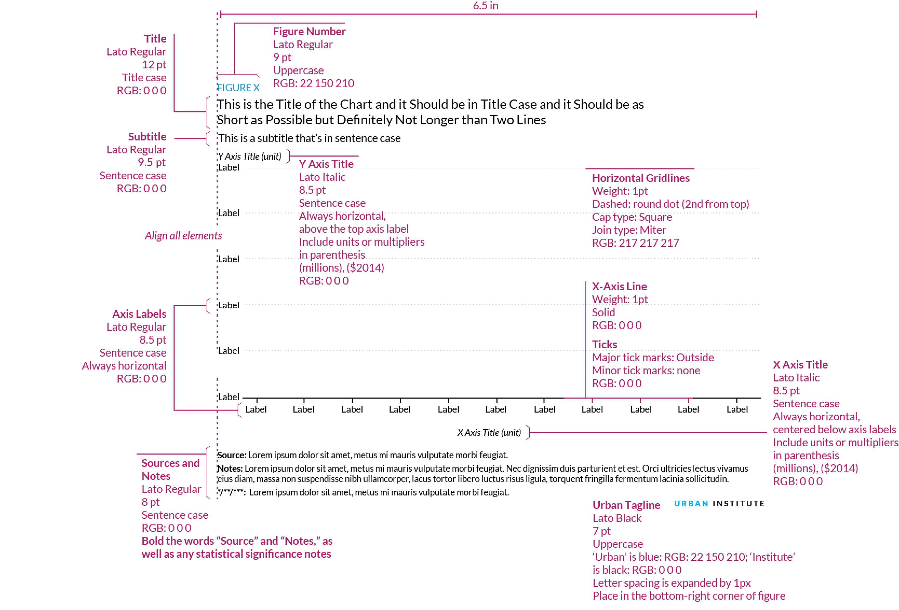On the web
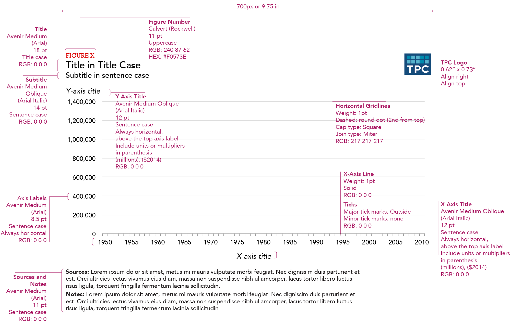Color
Urban's main colors are cyan, gray, and black. Yellow and magenta are used as secondary colors throughout the new Urban brand. Teriary colors for graphics include space gray, green, and red, and should be used infrequently.
When selecting colors for charts and graphs, we must first consider the type of data we are presenting. Usually, data can be grouped into one of two main groups: categorical or sequential.
Categorical palettes are best when you want to distinguish discrete chunks of data that do not have an inherent ordering.
Sequential color mapping is appropriate when data range from relatively low or uninteresting values to relatively high or interesting values. For sequential data, it’s better to use a palette that has a relatively subtle shift in hue accompanied by a large shift in brightness and saturation. This approach naturally draws the eye to the relatively important parts of the data. Sequential colors are used for sequential groups (not necessarily the way the data trends). So age groups young to old and date ranges might be something that I use sequential colors for.
Note: Yellow and Magenta should be used sparingly, as these colors should be considered for highlighting purposes (such as drawing attention to a certain category or indicating a trend line).
For more information about the subtleties of color, refer to this collection of blog posts from Visual.ly.
The following color combinations are intended to take some of the guess work out of the process of assigning colors to charts. They're only examples, and can be mixed-and-matched depending on the story you are trying to tell with your data.
When comparing data by gender do not use blue to represent men and pink to represent women. Instead, choose a color combination like yellow and cyan, or another combination of our main graphic colors.
Color combinations
Main graphic colors
Shades of main colors
var colors=["#CFE8F3","#A2D4EC","#73BFE2","#46ABDB","#1696D2","#12719E","#0A4C6A","#062635"];
var colors=["#F5F5F5","#ECECEC","#E3E3E3","#DCDBDB","#D2D2D2","#9D9D9D","#696969","#353535"];
var colors=["#FFF2CF","#FCE39E","#FDD870","#FCCB41","#FABE15","#BB8E2D","#7F6127","#3E3215"];
var colors=["#F5CBDF","#EB99C2","#E46AA7","#E54096","#E90989","#AF1F6B","#761548","#351123"];
var colors=["#DCEDD9","#BCDEB4","#98CF90","#78C26D","#55B748","#408941","#2C5C2D","#1A2E19"];
var colors=["#D5D5D4","#ADABAC","#848081","#5C5859","#332D2F","#262223","#1A1717","#0E0C0D"];
var colors=["#F8D5D4","#F1AAA9","#E9807D","#E25552","#DB2B27","#A4201D","#6E1614","#370B0A"];
One group
For one color group, grey should not be used as it loses focus while magenta draws attentionTwo groups
For two color groups, grey should not used as it loses focus while magenta draws attentionCategorical
Sequential
Three groups
For three color groups, grey should not used as it loses focus while magenta draws attentionCategorical
Sequential
Four groups
Categorical
Sequential
Five groups
Categorical
Sequential
Six Groups
Categorical
Sequential
Seven Groups

Consider consolidating categories or breaking up the chart. Seven groups is really too many.
Examples
The following examples use the styles and colors to illustrate common chart types. To deconstruct any example, download the the master Excel file.
Excel example files
Bar and Column Charts
When to use a bar or column chart
- For mostly for one variable
- To compares numerical values for different observations
- To show relative amounts
- To break one numerical variable out into different subgroups with grouped or stacked bars or columns
Style tips
- Avoid 3D bars or columns
- The y-axis should start at zero (there are a few instances when it is okay for the y-axis not to start at zero).
- The width of the bars should be about twice the width of the space between the bars.
- If all the bars measure the same variable, make them all the same color. Different shades have no relevance to the data.
- If you are showing fewer than 10 bars, consider eliminating the horizontal gridlines and y-axis line and directly labeling the data points.
- To differentiate subsets of data, projections, or averages, consider using a different color shade or gray.
- Legends should be stretched across the top of the chart and the order should match the order in the chart.
- Sequential series should be shaded from lightest to darkest for easy comparison.

Notes about this chart
- Columns on the right in the “Top 10 percent” are a lighter sequential shade to differentiate them from the quintiles.
- The “All” category is shaded gray to create visual contrast from the rest of the columns.
- This chart isn't perfect because the columns on the right side of the chart are disproportionately large—their categories are a fraction of the others, yet visually they are equally weighted. A possible solution is to use conditional formatting and build on a traditional distributional table.
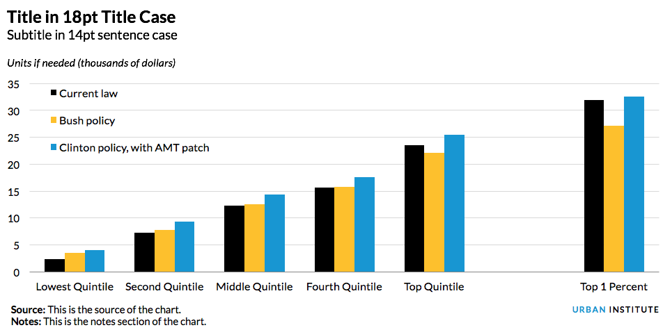
Notes about this chart
- When dealing with political comparisons, lean on the identifiable colors of the parties. Red colors are generally associated with Republicans and blues are generally associated with Democrats.
- When working on a chart that has political categories, be sure to use a nonpolitical color for baseline or unaffiliated series (in this case, “current law”).
Bar Charts
When to use a bar chart
- To show the trend in one variable, usually across a number of categories.
- To show multiple variables with multiple bars(if they are on the same scale).
- To show the same variable for multiple observations with multiple lines.
Style tips
- The y-axis should start at zero (there are a few instances when it is okay for the y-axis not to start at zero).
- Axis labels should always be horizontal. If you have long labels, consider making a horizontal bar chart instead of a column chart.
- When using a horizontal bar chart, right-align the category labels and center them vertically with the respect to the bar.
- Try to avoid vertical grid lines. Instead, directly label each bar.
Notes about this chart
- United States is highlighted using the Poppy color. OECD-Total is differentiated by using a darker shade of the primary bar color
Area and Stacked Column Charts
When to use an area chart
- To show the trend in composition of a group over time.
- To display the part-to-whole relationship of categories, as well as totals.
When to use a stacked column chart
- When you want to show the composition of groups, but the data is not in a continuous time series.
- A 100 percent stacked area chart can be used when displaying composition over time.
Style tips
- The y-axis should always* start at zero.
- When possible, directly label series. If they are too small, use a legend.
- Avoid individual data labels.
- In a single chart, try to keep the maximum number of categories to three or four. More is not always better. Plotting too many categories on the same chart gives a confusing picture and defeats the purpose.
- Legends should be stretched across the top of the chart, or on the right, and the order should match the order in the chart.
- Sequential series should be shaded from lightest to darkest for easy comparison.
Notes about this chart
- This chart is an example of how to use two color families to tell a better story. Here, the CTC series are in shades of gray and the EITC series are in blues. This helps the user visually connect each series.
- Instead of a key, there is enough room to directly label the series using text boxes. Coordinated text color also helps the user make the connection between the label and the series, but beware of colors that are very light or otherwise difficult to read when applied to text.
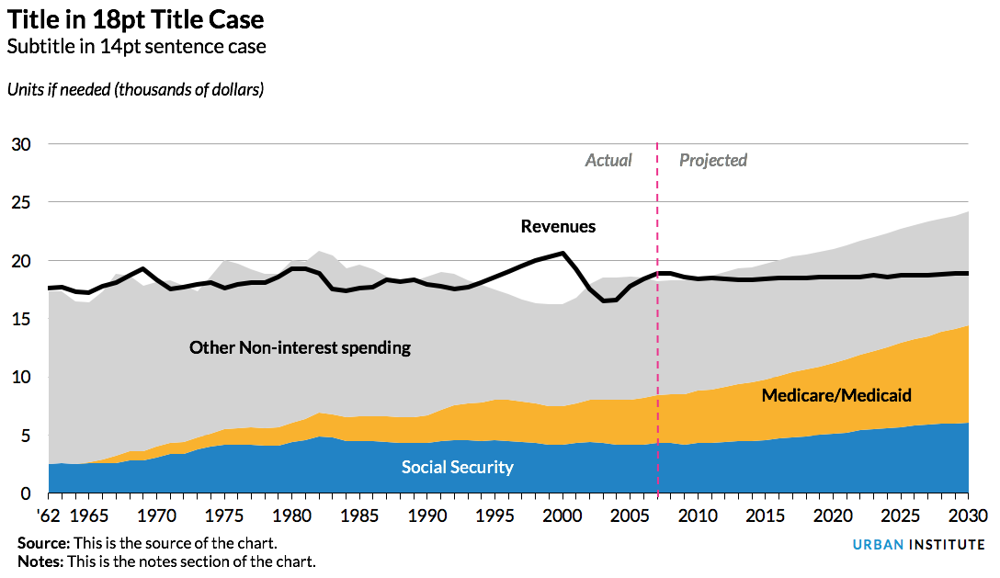
Notes about this chart
- X-axis labels should be every 5 or 10 years for time-series data like this, but the chart data starts at 1962. To hack this, I created a new column called "chart-year" and only included the years I wanted to show. Because of spacing issues, I had to abbreviate the first year, 1962, as '62.
- It appears that the growth in Medicare and Medicaid spending is a big story in this chart. For that reason, I chose to use the brightest color in the categorical palette for that series.
- Contrast in typographic elements helps establish hierarchy. The "actual" and "projected" labels are different from the series labels, so I made them gray and italic.
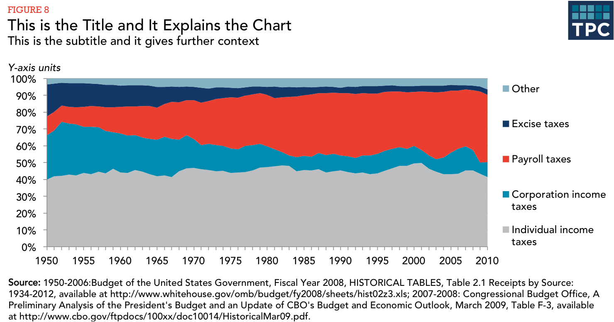
Notes about this chart
- The x-axis is starting to get a little cramped. To free up some space, we could modify the data so that anything over one million dollars is represented as $1M (notice in caps) instead of $1,000,000.
- I put the legend to the right of the chart in a vertical layout. The order matches the order of the data in the columns.
How it's made
Case study: Alternative to a stacked column chart
Often, when you want to show composition across several dimensions (usually time), the default choice is a stacked column chart. Though this is not a bad chart type, often a story can be better told by using a different chart.
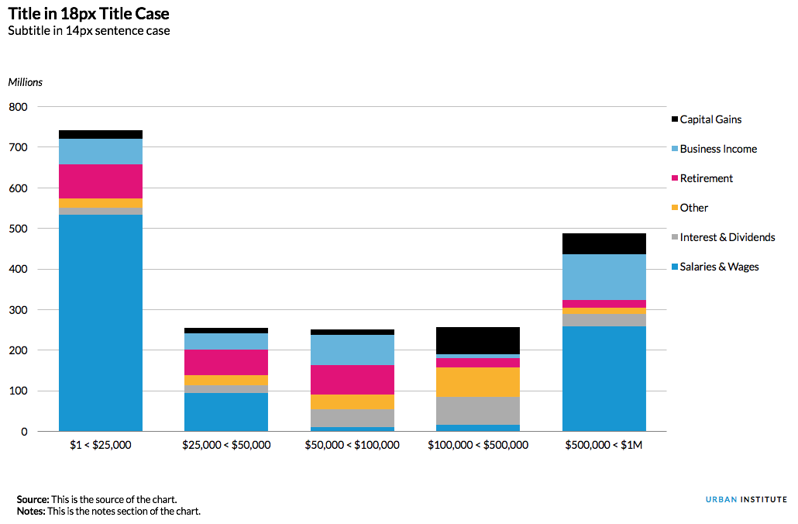Notes about this chart
- It is hard to see change in the middle series because of the shifting height of the salaries and wages bars.
- The x-axis is starting to get a little cramped. To free up some space, we could modify the data so that anything over one million dollars is represented as $1M (notice in caps) instead of $1,000,000.
- Because some series are too small to directly label them, a legend is necessary. The legend is positioned to the right of the chart in a vertical layout. The order matches the order of the data in the columns.
Grouped column chart
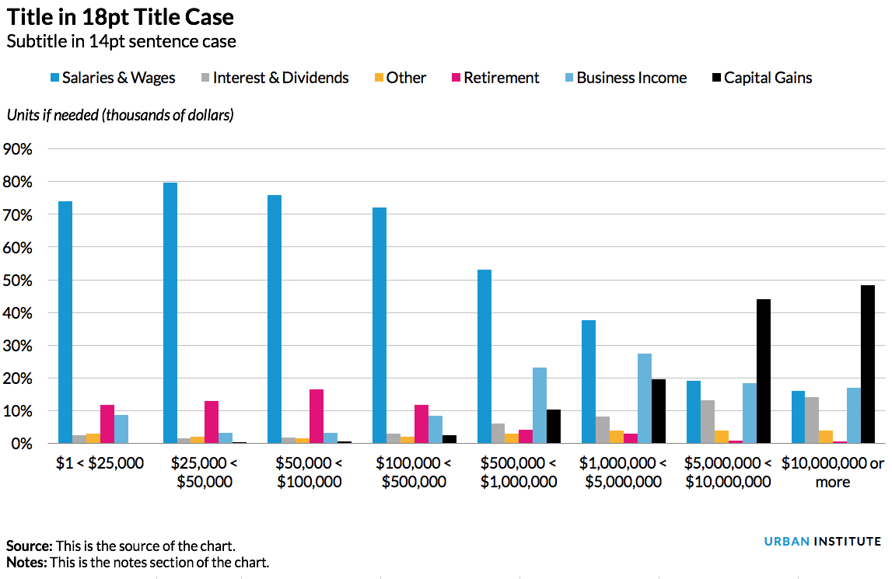Notes about this chart
- This version makes it easier to see the change in individual series across categories.
- It is also easier to compare series within the same category, allowing a better visual understanding of the part-to-whole relationship of any one data point.
- The x-axis is starting to get a little cramped. To free up some space, we could modify the data so that anything over one million dollars is represented as $1M (notice in caps) instead of $1,000,000.
Small Multiples Area Charts
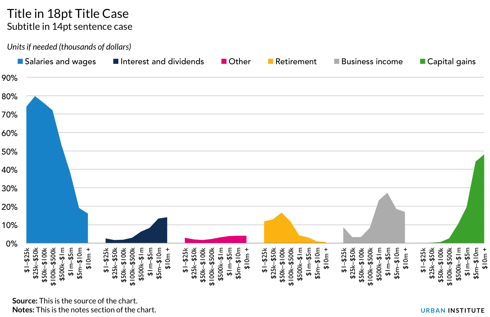Notes about this chart
- If the story for this chart is about the distribution of any given series, small multiple area charts are the way to go.
- For example, it's easy to see that the lower-earning groups get most of their income from salary, whereas the highest-earners get more from capital gains.
- The x-axis labels are a little small.
- The legend is likely unnecessary—the same labels could be accomplished with text boxes.
- The colors here are also unnecessary—There's no need to code the data by color because they're all separate. I do, however, like the contrast the colors give each category.
Line Charts
When to use a line chart
- To show the trend in one variable, usually over time.
- To show multiple variables with multiple lines (if they are on the same scale).
- To show the same variable for multiple observations with multiple lines.
Style tips
- The y-axis should always* start at zero.
- When possible, directly label series. If too close together, use a legend.
- Avoid individual data markers.
- Avoid dashed lines.
- In a single chart, try to keep the maximum number of lines to three or four. More is not always better. Plotting too many lines on the same chart gives a confusing picture and defeats the purpose.
- Legends should be stretched across the top of the chart and the order should match the order in the chart.
- Sequential series should be shaded from lightest to darkest for easy comparison.
Notes about this chart
- Supposing the data in this chart is categorical, I used two contrasting colors. If the data were sequential, I would have used two shades of teal.
- The x-axis is starting to get a little cramped. To free up some space, we could reduce the number of labels (labeling every 2, 5, or 10 years) or change the year format to be '98, '99, '00, etc.
- If the labels contain the month and year, the standard format would be "Jan. 2010", for instance. Alternatively, other formats could be "1/2010" or "1/'10".
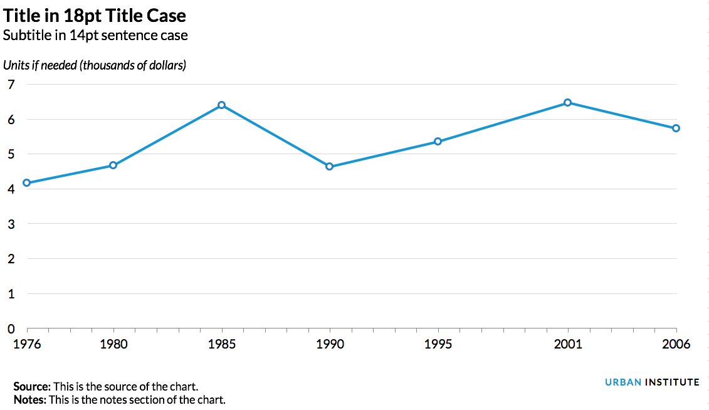
Notes about this chart
- Sometimes, we need to display data that are not on regular intervals. In these cases, it is helpful to mark the data points with individual markers.
Scatter plots
When to use a scatter plot
- To show the relationship between two variables (x and y axis) or three variables (represented by size or color of each point) without regard of time.
- To show outliers in the dataset.
- To show clusters and patterns within the dataset.
Style tips
- The y-axis should always* start at zero.
- If there is a third variable, vary the size and/or color of the points to show distinguish values within that variable.
- Avoid using more than one or two trendlines.
- If needed, add direct labels to show outliers.
- Add vertical and horizontal gridlines to allow for easy identification of the x and y coordinates of each point.
Notes about this chart
- Because the ranges of the x and y axes are identical, I readjusted the height and width of the graph to make it a square.
- Transparency is added to the points so that the points are still visible when being overlapped.
- The size of the points is based on a third variable, which in this case is interesting to use. As the value of the x-axis variable increases, so does the size of the points, therefore we see a positive relationship between these two variables.
Pie and Distribution charts
When to use a pie chart
- Use them sparingly. Often a bar or column chart is better. It is difficult to visually judge the size of circles (or circle segments). These segments are easier to discern as rectangles on a scale.
- Use pie charts when you want to show the relative relationship between two or three things
- When they add up to 100 percent (which may necessitate the inclusion of a category such as “none”, or “other”).
Cautions about pie charts
Excerpted from Jon Schwabish's An Economist’s Guide to Visualizing Data
The debate concerning the effectiveness of pie charts is among the most contentious in the field of data visualization. Many people love pie charts—they are familiar, easily understood, and present “part-to-whole” relationships in an obvious way. But others argue that because pie charts force readers to make comparisons using the areas of the slices or the angles formed by the slices—something that our visual perception does not accurately support—they are not an effective way to communicate information.
Pie chart slices that form 90-degree right angles—that is, slices that form one-quarter increments—are the most familiar to our eyes. Other amounts are more difficult to discern. For that reason, a column or bar chart is preferable in most cases.
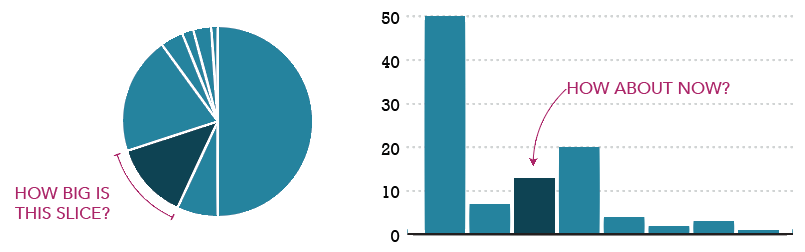Pie chart research
- Save the Pies for Desert, Stephen Few
- An Economist’s Guide to Visualizing Data, Jon Schwabish
- Pie Charts are the Worst, Walter Hickey
- Graphical Perception: Theory, Experimentation, and Application to the Development of Graphical Methods, William S. Cleveland and Robert McGill
The current thinking is pretty much summed up by this tweet from data visualization pioneer Edward Tufte:
Pie chart users deserve same suspicion+skepticism as those who mix up its/it's, there/their.To compare,use little table, sentence, not pies.
— Edward Tufte (@EdwardTufte) January 10, 2013
That’s not to say that pie charts don’t have a place when communicating research. They're OK to use when the number of slices are fewer than four or five— and when you’re trying to tell a clear ‘part-to-whole’ story about a single slice.
Pie chart examples
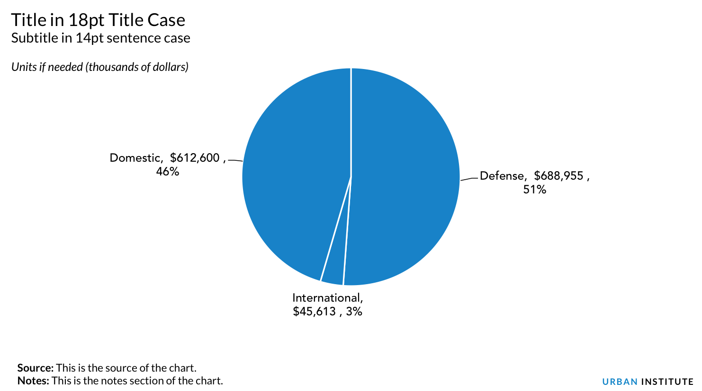Notes about this chart
- Some times, pie charts are useful. In this case, the largest slice is 51%, a value that is very easy to recognize because our eyes can easily find the 50% mark.
- Pie charts work extremely well when they have fewer than four or five slices.
- It's helpful to directly label each slice. Relying on a key requires the reader to do too much work to shift their eyes from one spot to another.
- With only a few colors and direct labels, extra colors become distracting. Stick with only one color and use a highlight if needed.
- An alternative, below, is a histogram. But in this case, the pie chart is nearly as compelling.
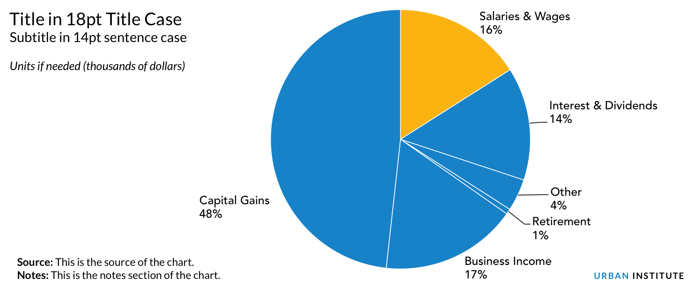
Notes about this chart
- This pie chart has many more slices than the first example, however It's still fairly easy to make out the individual slices.
- Depending on the purpose of the chart, a histogram may be a better option. If the purpose is to show the size of one slice compared to the rest of the categories, a pie chart makese sense. In that case, it would be good to highlight that individual slice with a different color. If the purpose of the chart is to show how each slice compares to other slices, a histogram would work better (below). Histograms make it much easier to compare values than pie charts.
Maps
should it even be a map?
Just because you've got geographic data, doesn't mean that you have to make a map. Many times, there are more efficient storyforms that will get your point across more clearly. If your data shows a very clear geographic trend or if the absolute location of a place or event matters, maps might be the best approach, but sometimes the reflexive impulse to map the data can make you forget that showing the data in another form might answer other—and sometimes more important—questions. Consider using other graphic types when the interesting patterns are not geographic patterns, or when the geographic data is more effective for analysis than for presentation. Many times, a simple bar chart, column chart, scatterplot or table are more effective at translating your research to a reader.
In some cases, maps might actually be misleading. State level US maps, for example, give disproportionate weight to states with large land areas, and tend to obscure smaller states in the Northeast. Maps with more granularity can still be misleading. Many times, what appear to be geographic trends are actually directly correlated to population density (wealth, power consumption, etc.), or in some cases directly correlated to some other hidden variable such as racial composition, age distribution, or even weather.
Map Projections
Depending on the purpose and content, maps should use different projections. US maps for print publication, or use in reports should use the Albers Equal Area projection. Simple interactive county- or state-level maps also use the Albers projection. Zoomable tile-based interactive maps use the Mercator projection.
Map Colors
Maps should follow the same basic rules as other graphics when it comes to colors. Choropleth maps, or maps that show the magnitude of a variable, should normally use the blue sequential ramp.
Sometimes, a map needs to display change in a positive and negative way. In those cases, a diverging scheme works best.
Other ways to map
Need to show data across multiple points in time? Consider using small map multiples to show the progression or spread.
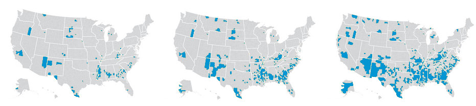Tile Maps
The problem with normal state-by-state maps is that the western US has very large states and the eastern US has small states. This leads to the western states being over represented with more visual weight than the states in the northeast.
Recently, many organizations have adopted use of grid or tile maps. The advantage of these maps is that each state has equal visual weight.
Even better, these maps can be created with a simple excel file.
Additional resources
Have a question or looking for more help? Contact Ben Chartoff or Jon Schwabish.
Photo from Shutterstock